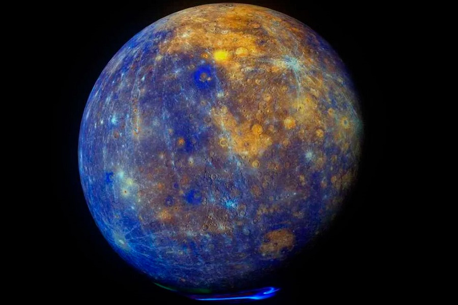

Los ocho planetas que componen el sistema solar son, de menor a mayor distancia respecto al Sol, los siguientes:
Los planetas son cuerpos que giran formando órbitas alrededor de la estrella, tienen suficiente masa para que su gravedad supere las fuerzas del cuerpo rígido, de manera que asuman una forma en equilibrio hidrostático (prácticamente esférica), y han limpiado la vecindad de su órbita de planetesimales (dominancia orbital). Los planetas interiores son Mercurio, Venus, la Tierra y Marte y tienen la superficie sólida. Los planetas exteriores son Júpiter, Saturno, Urano y Neptuno, también denominados planetas gaseosos porque contienen en sus atmósferas gases como el helio, el hidrógeno y el metano, y no se conoce con certeza la estructura de su superficie.
| Planeta | Tamaño: | Imagen: |
|---|---|---|
| Mercurio | 2.439,7 km |  |
| Venus | 6.051,8 km | |
| Tierra | 6.371 km | |
| Marte | 3.389,5 km | |
| Jupiter | 69.911 km | |
| Saturno | 58.232 km | |
| Urano | 25.362 km | |
| Neptuno | 24.622 km | |